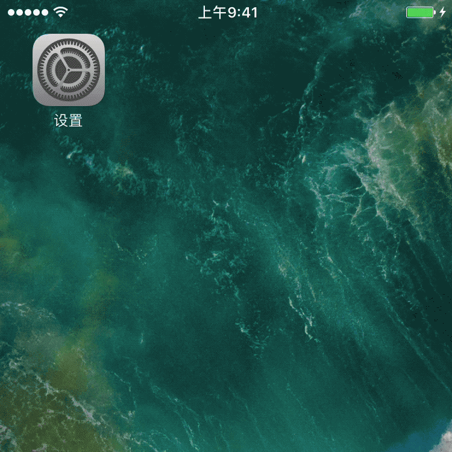

MyMM App 无法联网怎么办
点击：设置 > 美美 > 无线数据 >
选择“无线局域网与蜂窝数据”

前往设置
文字版 操作指南
1
如果在“使用无线局域网与蜂窝移动的应用”列表中找不到美美App，可按以下步骤进行设置：
- 在列表中任意选择一个App，先关闭“无线局域 网与蜂窝移动数据”，即不允许其使用数据。然 后再重新打开允许使用“无线局域网与蜂窝移动 数据”。
- 返回主屏幕，再次打开美美App，这时候系 统会提示“是否允许App使用数据网络”，点击 “允许”即可顺利联网使用。
2
飞行模式
手机的飞行模式会关闭设备的无线功能，这种情 况下，关闭飞行模式即可正常联网。
- 进入“设置 - 飞行模式”
- 滑动按钮，关闭飞行模式即可
*该情况主要出现在国行iPhone上，在未来的iOS版本中，苹果应该会修复此Bug。